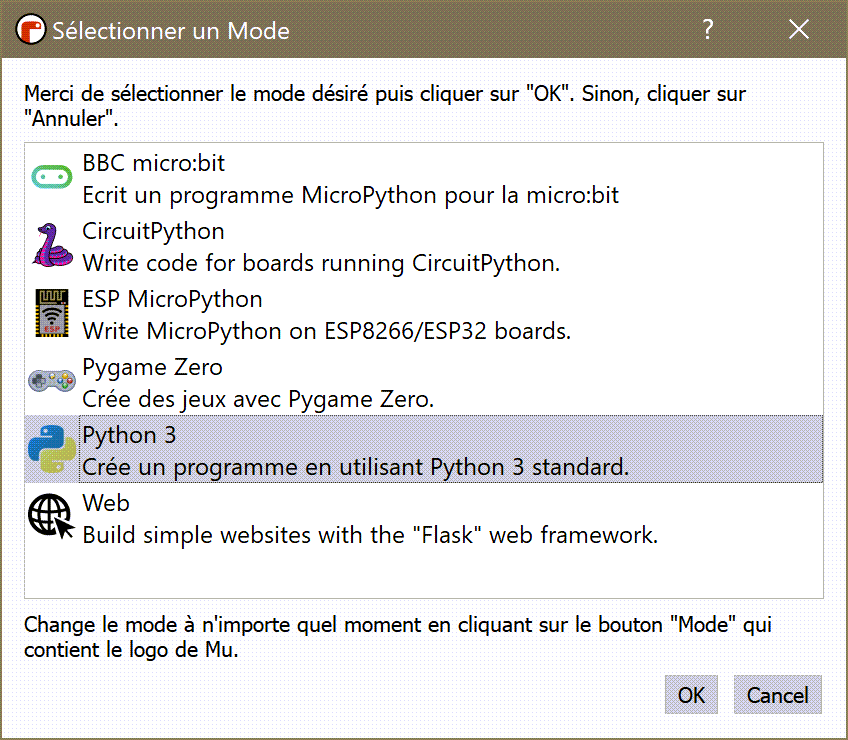
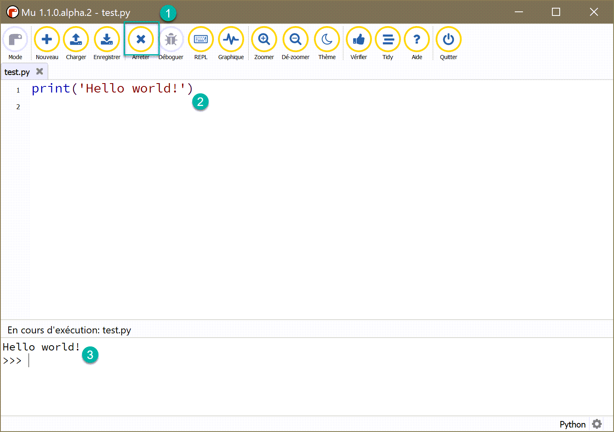
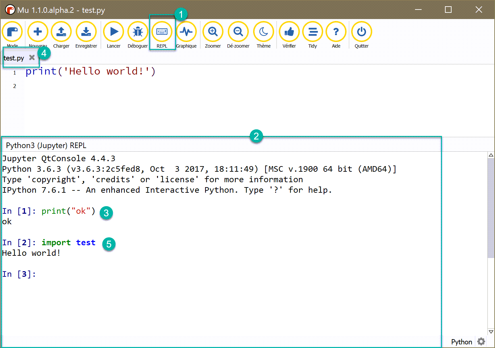

Warning
This project is being split into 3 separate projects:
friendly_traceback,friendly, andfriendly_idle.
The documentation does not reflect this change.
If you are a end-user, just install friendly until further notice.
About Mu¶
Mu is a fantastic editor for absolute beginners. Its design philosophy is to enable beginners to download a single program that comes with everything they need to begin their programming journey.
You can use Mu to program in different environments known as “modes”. Note that Mu uses the default language for the computer, which explains why all the screenshots I include are in French. It is currently not possible to (easily) change the language used for Mu’s menu items.
{kind=link}
friendly has only been tested with the Python 3 mode. It should work when using the Pygame zero or the Web mode.
Warning
Unfortunately, I am not able at present to provide any support for the other modes (BBC micro:bit, CircuitPython, ESP MicroPython).
Two ways to use Python¶
Using the Python 3 mode, there are two ways to execute Python code:
Using a “run” button to execute code saved in a file.
Using a REPL to execute code interactively.
{kind=link}
Running a program in the editor¶
First, I show what happens using the “run” method.
{kind=link}
After clicking on the “run” button, the icon (1) changes to an “X”. The code in the editor (2) is executed and the result is shown in the output pane (3) where we can continue entering commands.
Using the REPL¶
{kind=link}
After clicking on the REPL button (1), a panel (2) opens where you can
enter Python code (3). If you have a file saved (4) in the editor,
you can use the import statement (5) and have its code executed
in the REPL.
Warning
The REPL used by Mu is a well-known Python interpreter which
has been created by a different group of developers.
It has at least one bug which I have reported: if you write code
with an extra closing ), it is not interpreted as a SyntaxError
but behaves as though more code is expected to have a complete
statement.
{kind=link}